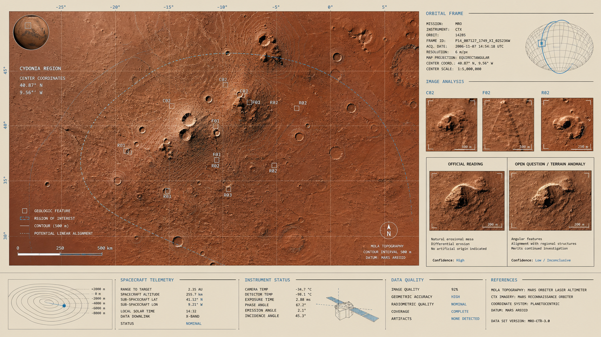

resource
Mars
Mars X Files Map
Working index to sort the Mars package in X Files with a simple taxonomy: `strong`, `debated`, `speculative`.
Updated: Apr 17, 2026
2 min read
344 words

On this page
Source context
Generated from Obsidian source note. Treat claims as research leads until corroborated by primary material.
No explicit external URL in note body
Citation panel
Generated from the vault source. Use linked sources and cross-references as the verification trail.
Obsidian source note only
Mars X Files Map
What is
Working index to sort the Mars package in X Files with a simple taxonomy: strong, debated, speculative.
reading rule
strong= reasonably solid scientific or official evidence within saved sourcesdebated= hypothesis with interesting signal but still open or historically ambiguousspeculative= high cultural/conspiracy/narrative value, but no strong empirical validation
1) Strong
- ancient-water-on-mars-and-climate-loss — scientific baseline: past surface water, climate loss, and plausible ancient habitability
- ancient-ocean-on-mars-evidence-vs-open-debate — strong geomorphological evidence for an ancient ocean in the north, although not definitive
- cydonia-martian-mystery-region — Cydonia official geological reading
- face-on-mars-official-image-reanalysis — model case of reduced pareidolia due to better resolution
2) Debated
- mars-canals-schiaparelli-lowell-and-the-interpretive-error — real historical observation + strong interpretive drift
- ancient-ocean-on-mars-evidence-vs-open-debate — also lives here because the extent, duration and exact shape of the ocean remain open
- mars-x-files-anomalies-vs-official-readings — framework for separating planetary data from visual overreads
3) Speculative
- cia-mars-exploration-1984 — authentic remote viewing document on Mars; high historical/cultural value, weak empirical value
Submap by topic
Water, climate and past habitability
Visual anomalies and geology
- mars-x-files-anomalies-vs-official-readings
- cydonia-martian-mystery-region
- face-on-mars-official-image-reanalysis
Interpretation history
Esoteric Mars / CIA / remote viewing
Short critical reading
- strong package holds
wetter and more complex ancient Mars - the discussed package holds
some readings remain open or were distorted by observational limits - speculative package holds
there is strange documentary material about Mars, but no hard evidence of civilization or validated remote viewing
Next useful expansion
claim / evidence / official explanation / statuscatalog for famous Martian anomalies